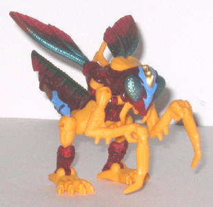
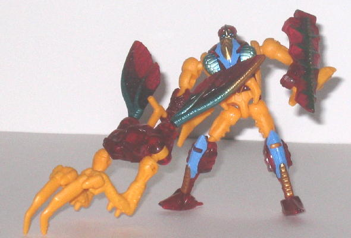
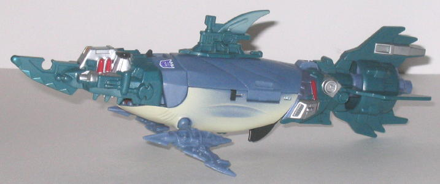
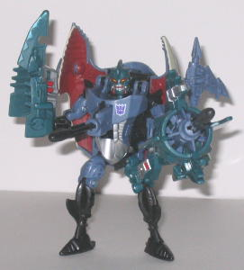

Overbite
w/ Repugnus (Universe; Target Exclusive)
Overbite
w/ Repugnus (Universe; Target Exclusive)
Price
: $17 (U.S.)
Although originally this
set was originally slated for release in the main Universe line, the non-exclusive
portion of the line was cancelled because of the lack of stores willing
to carry it, so here the set is, more than a year later, as a Target exclusive
at a slightly cheaper price!
Repugnus


Allegiance
: Autobot (erroneously
labeled as a Decepticon on package)
Size
: Basic
Difficulty of Transformation
: Medium
Color Scheme
: Light orangish yellow,
transparent cherry red, and some metallic goldish bronze, light purplish
blue, metallic aquamarine, silver, metallic greenish bronze, and dark aquamarine
Rating
: 7.4
(NOTE: Because this is a repaint, this is
not a full-blown review. This mainly covers any changes made to the mold
and the color scheme, and merely compares it to Beast Wars Buzzclaw. For
a review on the mold itself, read the review of Beast Wars Buzzclaw
here
.)
Universe Repugnus is
a pretty big nod to G1 Repugnus-- an Autobot who looked like a Decepticon,
and was also an odd mixture of animals and had a similar color scheme.
Ignoring the fact that he's a homage, however, Universe Repugnus stands
out as an excellent toy on his own. The mold itself is rather so-so, but
the paint apps are absolutely ASTOUNDING, even for a Universe figure! The
blue-and-gold jagged pattern on the insect face looks really wicked and
is presumably Repugnus' "Energon radiation". The blue and gold apps on
the legs also look great, and the nice aquamarine-to-bronze fade on the
wings looks incredibly beautiful. The dark aquamarine and bronze coloring
on the "tail" piece also looks very cool, and the weird metallic coloring
on his face, together with the silver teeth and aquamarine eyes, looks
downright spooky. The basic transparent red and orangish yellow plastic
color scheme is decent enough, though making the orange-yellow duller would've
looked better, I think. One other thing of note is that Repugnus shares
the same mis-assembled mandible problem that the various versions of the
Botcon Buzzclaw
mold had, but it's considerably
easier to fix this problem on Repugnus, since there's no glue holding his
head halves together-- it doesn't require all that much skill, this time.
Overbite


Allegiance
: Decepticon
Size
: Deluxe
Difficulty of Transformation
: Easy
Color Scheme
: Light grayish blue,
green-blue, dull red, yellowish white, black, and some silver, metallic
silvery blue, moderately dark red, yellow, and dull metallic gold
Rating
: 8.3
(NOTE: Because this is a repaint, this is
not a full-blown review. This mainly covers any changes made to the mold
and the color scheme, and merely compares it to the original Beast Wars
Cybershark. For a review on the mold itself, read the review of the original
Beast Wars Cybershark
here
.)
Overbite is HEAVILY remolded
from the original Cybershark toy, and is an exact replica-- in both colors
and mold-- of the Japanese Beast Wars II Hellscream figure, with the only
difference being a new Decepticon emblem. But what an awesome remold it
is! Instead of being a hammerhead shark, now this toy is a Cyborg-esque
shark-submarine hybrid! The rear propulsion "fin", the other mecha-fins,
and the blade-shaped head all look very sharp, very deadly, and very cool.
The mold and paint detailing on them is also very nice, too-- tons of little
tubes and wires everywhere. In robot mode, it's even better-- the new head
has the appropriate fin and marine details, but the sharp teeth and feral
grin really make him look fearsome. The left arm has also been remolded
so that the tailfin-piece attaches to it below the elbow, giving Overbite
a BIG ol' cannon on that arm, as it can fire a missile out of its center.
The head piece also detaches so Overbite can hold it as a pirate sword.
Arrrrr. Another, more minor, remold is that the upper part of the left
leg is now more cyborg-ish, to further emphasize the asymmetrical appearance
of this fearsome dude. His colors of black, light blue, and blue-green
are also a pretty good color scheme, though it is pretty similar to Cybershark's.
Of course, the vast majority of people don't have Cybershark anymore and
don't have Beast Wars II Hellscream, so that's not that big of a deal.
The Overbite w/ Repugnus
set is a pretty nice buy if you like the Beasts, with two really fearsome-looking
molds with nice color schemes and good paint apps. And for $17 instead
of $20, you can't go wrong. Recommended.
No Stats
Review by Beastbot
Back to Transformers:
Universe Index